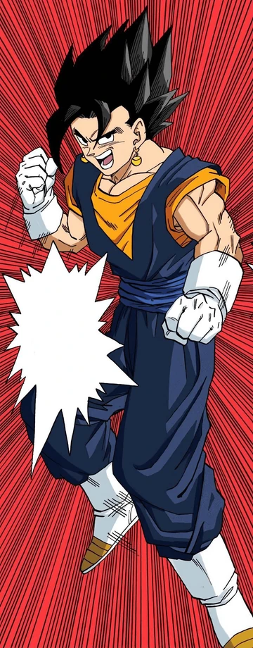

| TRANSFORMACION/FUSIÓN |
PERSONAJES QUE PUEDEN USARLA |
EPISODIO EN LA QUE SE VE POR PRIMERA VEZ |
NOMBRE DE LA TRANSFORMACION |
|
Goku, Vegeta, Gohan, Goten, Trunks, Broly, Goku Black, Vegeto, Gogeta, Kefla, Gotenks. |
DBZ Capitulo 95. |
Super Saiyan 1/ Super Saiyan Original / Super Saiyan (Tipo A). |
|
DBZ Capitulo 184. |
Super Saiyan 2 (Tipo A). |
|
Goku, Gotenks. |
DBZ Capitulo 245. |
Super Saiyan 3 (Tipo A). |
|
Goku, Vegeta, Vegeto, Gogeta. |
Pelicula Dragon Ball Z la batalla de los dioses y DBS Capitulo 9. |
Super Saiyan Dios. |
|
Goku, Vegeta, Vegeto, Gogeta. |
Pelicula DBS Resurrección de Freezer y DBS capitulo 24. |
Super Saiyan Blue/ Super Saiyan Dios Super Saiyan. |
| |
Vegeta. |
DBS Capitulo 126. |
Super Saiyan Blue Evolution. |
|
Goku Black. |
DBS Capitulo 56 |
Super Saiyan Rose. |
|
Goku. |
DBS Capitulo 110. |
Ultra Instinto (Señal). |
|
Goku. |
DBS Capitulo 116. |
Ultra Instinto Dominado / Ultra Instinto Perfecto. |
 |
Broly, Kefla, Kale (No mencionada anteriormente). |
Pelicula Dragon Ball Super: Broly (aun no ha salido en la serie). |
Super Saiyan Legendario / Super Saiyan Berserk (Tipo C). |
|
Trunks. |
Dragon Ball Super Episodio 65. |
Super Saiyan Rage / Super Saiyan Furia. |
|
Vegeta. |
No disponible en serie o pelicula, solo manga, capitulo 74. |
Ultra Ego. |
 |
Gohan. |
Pelicula: Dragon Ball Super: SuperHero, no sale en la serie. |
Gohan Bestia. |
|
| Goku, Vegeta, Trunks, Gohan. |
DBZ Capitulo 156. |
Super Saiyan Grado 2, Grado 2.5, Grado 3, Grado 4/ Full Power / Poder Desbloqueado. |
|
Piccolo |
Pelicula: Dragon Ball Super: SuperHero, no sale en la serie. |
Piccolo Orange. |
|  |
Vegetto (Fusion Por Pothala de Goku Y Vegeta). |
DBZ Capitulo 269. |
Vegetto, Tiene capacidad de usar todas las transformaciones que goku y vegeta compartan ej: super saiyan, super saiyan 2, super saiyan dios etc... |
|
Gogeta (Fusion por danza metamoru de Goku Y Vegeta.) |
Pelicula de Dragon Ball Super Broly. |
Gogeta, Tiene capacidad de usar todas las transformaciones que goku y vegeta compartan, al igual que vegetto. |
|
Kefla (Fusión por Pothala de Kale y Caulifla). |
Dragon Ball Super Capitulo 114. |
Kefla, Tiene Capacidad de usar todas las transformaciones COMBINADAS de kale y caulifla, por eso se da el color verde de su pelo al transformarse. |
|
Gotenks (Fusion por danza metamoru de Goten Y Trunks. |
Dragon Ball Z Capitulo 240. |
Gotenks, tiene capacidad de usar todas las transformaciones de goten y trunks, y una transformación extra, combinando fuerzas de los dos para conseguir el super saiyan 3. |
|
Freezer. |
Dragon Ball Z Capitulo 44. |
Freezer primera forma. |
|
Dragon Ball Z Capitulo 78. |
freezer Segunda forma. |
|
Dragon Ball Z Capitulo 82. |
Freezer tercera forma. |
|
Dragon Ball Z Capitulo 86. |
Freezer, se considera su forma original, muchos lo llaman forma final. |
|
DBS Capitulo 24, Pelicula DBS:Resurrección de Freezer |
Golden Freezer. |
|
DBS Capitulo 87 del manga, no animado aun. |
Black Freezer. |
|
Cell. |
Dragon Ball Z Capitulo 141. |
Cell primera forma. |
|
Dragon Ball Z Capitulo 152. |
Cell semi-perfecto. |
|
Dragon Ball Z Capitulo 160. |
Cell perfecto. |
|
Dragon Ball Z Capitulo 189. |
Cell super perfecto. |
|
Majin Buu. |
Dragon Ball Z Capitulo 235. |
Majin Buu Gordo/ Inocente. |
|
Dragon Ball Z Capitulo 254. |
Majin Buu (Maldad pura). |
|
Dragon Ball Z Capitulo 256. |
Super Buu. |
|
Dragon Ball Z Capitulo 265. |
Super Buutenks, ha absorbido a Gotenks. |
|
Dragon Ball Z Capitulo 268. |
Super Buuhan, ha absorbido a gotenks, gohan y piccolo. |
|
Dragon Ball Z Capitulo 276. |
Kid Buu, la forma original de Buu. |